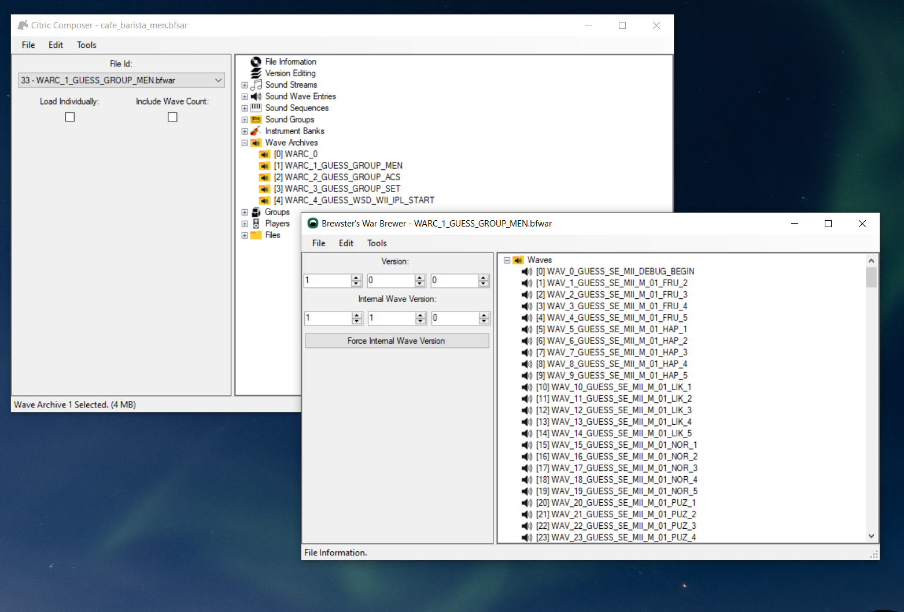
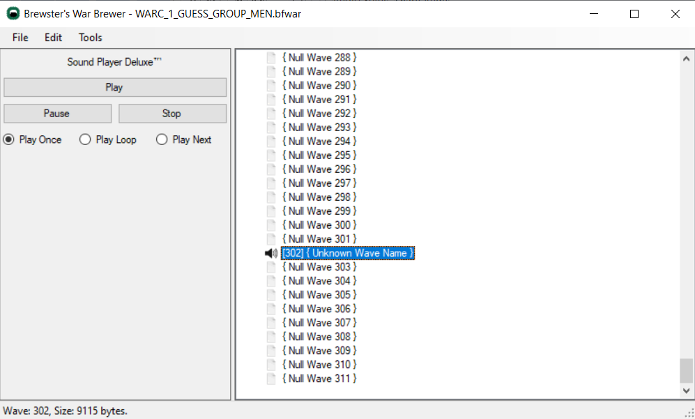
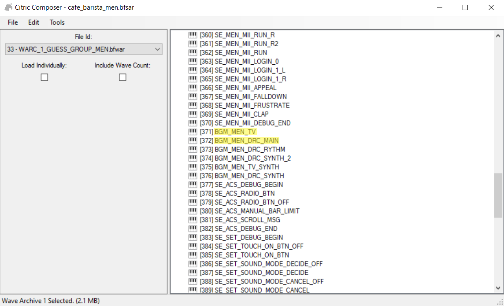

Music
What you need
-
A program that can export audio file as
.WAV- For example Audacity
- SequenceConvert
Template
We will be working with this template
Music Lenght
With this template you will be able to make custom music up to 1:55 at 32000khz Stereo before the file is too large to work with
I want to make longer music
You can also use the following template
Download template (Music Without MII SFX)
This template does not contain Mii SFX and will get you about 2:26 at 32000khz Stereo
My music is still longer than 2:26
If you want to make longer music you can export your music it at a lower sample rate and use Mono instead of Stereo, what matters is that the size of the file is not too large
Apply the patch to a copy of your cafe_barista_men.bfsar file (Patching) and come back here when you're done
Exporting Music as WAV
Use the program of your choice to export your music as a .WAV file
The best settings are
- Sample Rate: 32000 kHz
- Channels: Stereo
- Encoding: Signed 16-bit PCM
Citric Composer
Adding your music
- Launch Citric Composer
- Open your cafe_barista_men.bfsar already patched with the provided Template
- Double click
Wave Archives - Double click
[1] WARC_1_GUESS_GROUP_MEN -
A new window will open

-
Double click
Waves - Scroll to the bottom to find
[302] WAV_302_GUESS_BANK_MEN_BGM - Right click
[302] WAV_302_GUESS_BANK_MEN_BGM - Click replace
- Choose your
.WAVfile -
Wait for it to change the name to
[302] {Unknown Wave Name}
-
Click file on the top left corner
- Click Save
You can now close this window
Looping
- Go back to the original window of Citric Composer
- Double click
Sound Sequences -
Scroll until you find
[371] BGM_MEN_TVand[372] BGM_MEN_DRC_MAIN
-
Right click
[371] BGM_MEN_TV - Click
Export - Save the
BGM_MEN_TV.bfseqfile on your device - Right click
[372] BGM_MEN_DRC_MAIN - Click
Export - Save the
BGM_MEN_DRC_MAIN.bfseqfile on your device
Don't close Citric Composer yet
We are not done using Citric Composer but we need to convert the files
Sequence Convert
Now we will use SequenceConvert
- Drag
BGM_MEN_TV.bfseqand drop it on SequenceConvert.exe - Drag
BGM_MEN_DRC_MAIN.bfseqand drop it on SequenceConvert.exe
This will create the .fseq files we need
Open BGM_MEN_TV.fseq with the text editor of your choice
You need to change the highlighted line 19: fn5 120, 1000
- 120 is the volume
- 1000 is the music lenght
To calculate and update the music lenght value in order to match the length of your song you will want to take the number of seconds your song is and multiply that value with 192.
Example
- A 1:55 song has 115 seconds
- Multiply
115 x 192 - The result is
22080 - In this example the music lenght value would be changed to
fn5 120, 22080
- Now save your changes
Now open BGM_MEN_DRC_MAIN.fseq with the text editor of your choice, the process is the same but if you want to see it click "Process" below
Process
You need to change the highlighted line 19: fn5 120, 1000
- 120 is the volume
- 1000 is the music lenght
To calculate and update the music lenght value in order to match the length of your song you will want to take the number of seconds your song is and multiply that value with 192.
Example
- A 1:55 song has 115 seconds
- Multiply
115 x 192 - The result is
22080 - In this example the music lenght value would be changed to
fn5 120, 22080
- Now save your changes
Now that you have edited both BGM_MEN_TV.fseq and BGM_MEN_DRC_MAIN.fseq files
- Drag
BGM_MEN_TV.fseqand drop it on SequenceConvert.exe - Drag
BGM_MEN_DRC_MAIN.fseqand drop it on SequenceConvert.exe
This will turn the .fseq files back to .bfseq
Replacing files
Go back to Citric Composer
- Right click
[371] BGM_MEN_TV - Click
Replace - Replace with the
BGM_MEN_TV.bfseqyou just converted - Right click
[372] BGM_MEN_DRC_MAIN - Click
Replace - Replace with the
BGM_MEN_DRC_MAIN.bfseqyou just converted - Click
Fileon the top left corner - Save
Success
You can now test your music SDCafiine
If you are having issues
Tips by yeetyeeter456
Tips and Tricks for making Wii U Custom Music
Credits
Thanks to the discord user @yeetyeeter456 for these tips and tricks
Tips and tricks to help you spend just a few minutes per song!
NOTICE:
- This tutorial assumes you already know the basics of making Wii U music. If you have not already, look at this tutorial: Music
- I am not a pro at this I just have some helpful things I've found and want more people to know about.
Ok, let us begin
-
If you need a feature rich and free option for converting files to .wav, shortening files, or changing khz, Audacity works very well.
-
Before starting to make something, ALWAYS check the file in Audacity (or another audio tool) to make sure its in stereo and the khz aren't too high. This is just a good routine to get into so that you make sure you never waste your time.
-
Keep a backup of your patched .bfsar file and just copy it when you want to make a new song. This way you won't have to patch it every time.
-
Keep back ups of the converted .FSEQ files for BGM_MEN_DRC_MAIN and BGM_MEN_TV in the same folder as the converter. This way all you'll have to do when replacing the .bfseq files is edit the .FSEQ files again to whatever their new values they should be and then drag and drop each one into the converter.
-
Have a place to put your finished music that way you always know where they are.
-
If you have a fairly short song, convert it into higher khz to make it sound better. If it doesn't work you can always lower the khz again.
-
If you have a fairly long song, convert it into lower khz to fit the whole thing. This is how I was able to fit the entire 4 minute song for my upside down theme.
-
Keep websites like: https://www.marcrobledo.com/RomPatcher.js/ saved somewhere for easy access
alright, hopefully that helped some of you but That's all I can think of on the spot. I'll probably add more later though.